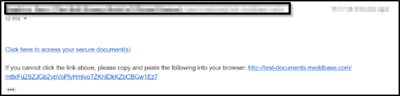
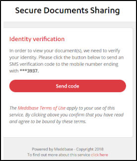
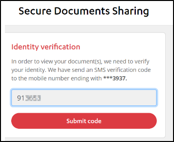
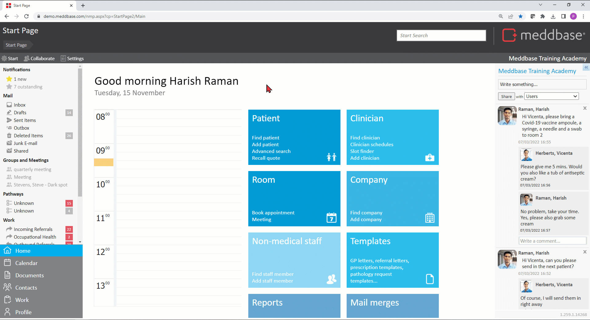
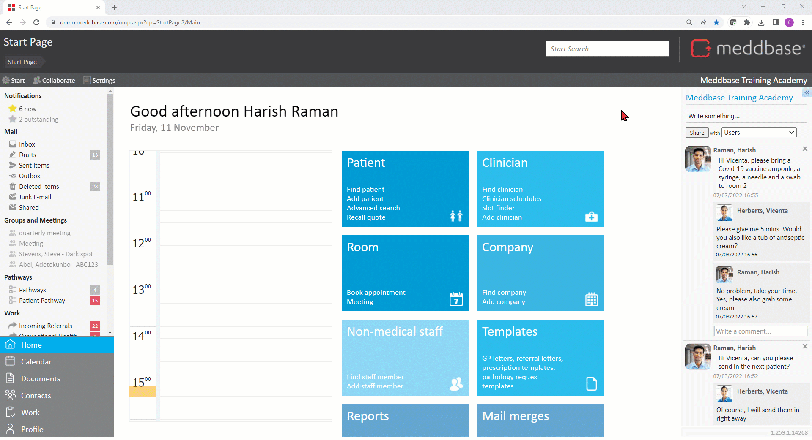
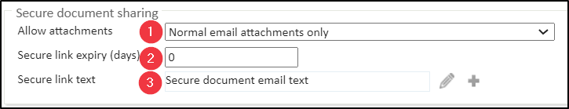
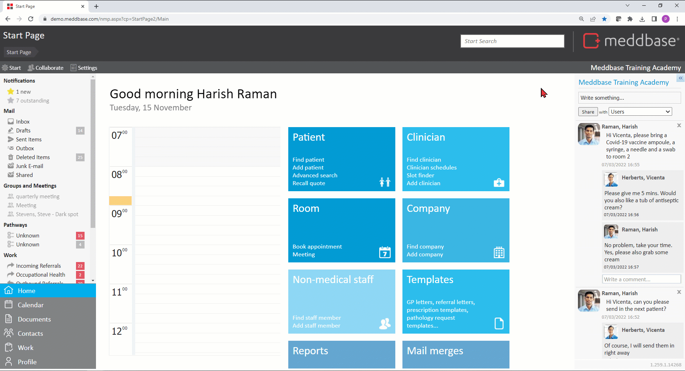
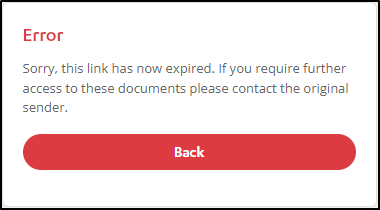

Meddbase allows emailing attachments as Secure Links, meaning the recipient of the email does not receive the attachment directly in the email, but instead follows a secure process that requires access to a mobile phone and submitting a code sent to that mobile.
This article will walk you through:
To send a document attached to an email as a Secure Link: from patient documents:
*The patient's email address and mobile number are populated as per their Personal Details page.
The patient/recipient will receive the below email and can proceed with clicking the link:

The patient/recipient must click Send Code:

The code will be texted to the patient's/recipient's mobile number, allowing them to enter this into Secure Document Sharing.

The patient will then have access to the confidential documents sent and have an option to download/print the file.
To send an email attachment as a Secure Link from the email inbox:
*As a Meddbase user, you will have a demographic record in the system. Each record has a Contacts section where people's contact information can be added.
** When you type in the recipient's email address and click send, the mobile number field will be blank and the number will need to be provided manually, otherwise the attachment can not be sent as a secure link.

There are configuration options for the chamber that determine how document attachments can be shared and what opt-out options users will have. To access these:

You will find the below configuration options available:

This field allows specifying the number of days the link remains active.
Please note! There is a default template in your chamber that contains Template Codes generating the link for the recipient to follow. The default message and Template Codes are as follows:
{BeginLink}Click here to access your secure document(s){EndLink}
If you cannot click the link above, please copy and paste the following into your browser: {CopyLink}
This link is valid until {ExpiryDate}.
If you choose to select a different template or edit the default, please ensure you include the necessary Template Codes shown above.
Should you wish to attach more than one document to the email please see the article: Attaching multiple documents to an email for assistance.
Once a document/file had been emailed as a secure link, changing the above settings will not deactivate the link retrospectively.
Instead, Meddbase allows you to force shared document links to expire. To do this:
From the Start Page click the Admin tile.
Click the Document sharing tile.
On the Document sharing administration set a date range and click Search.
Click on the relevant document.
Click Expire in the upper-left corner of the screen.
The status of the document will be changed from Live to Expired*.
*You can change the status of documents shared as secure links within a date range from Expired to Live by clicking Unexpire.

Once a shared document link's status is changed to Expired, the patient/recipient will no longer have access to that document. Should they try to use the link included in the original email, they will be presented with the below error message:
